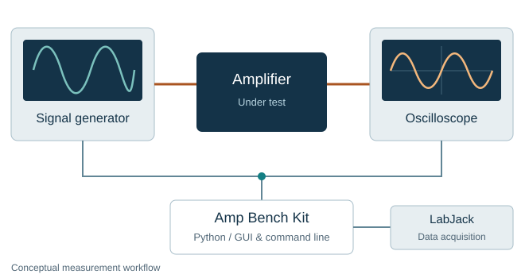

Signal generation
Helpers for the FeelTech FY3200S function generator support source configuration and signal-generation tasks through its serial interface.
Instrument automation
Amp Bench Kit combines signal generation, waveform capture, and data acquisition in a Python toolkit with GUI and command-line interfaces.

The engineering problem
Amplifier measurements often involve several instruments and repeated sequences: configure a source, capture a waveform, collect data, and examine the result.
Amp Bench Kit brings those operations into shared workflows, with instrument helpers and a common interface for manual work and scripted sequences.
Implementation
Helpers for the FeelTech FY3200S function generator support source configuration and signal-generation tasks through its serial interface.
VISA / SCPI workflows connect to a Tektronix TDS2024B oscilloscope for instrument control and waveform capture.
LabJack U3 / U3-HV support brings analog and digital I/O into the same bench toolkit.
The toolkit includes frequency-sweep and waveform-analysis helpers, including RMS, peak-to-peak, and THD calculations.
Development
Simulated hardware modes let contributors explore workflows and test software behavior without connecting the instruments.
Those checks support development. Measurement accuracy, calibration, and behavior on a particular bench still depend on the instruments and setup used.
Get in touch
For engineering roles, freelance projects, or questions about this work, email me or connect on LinkedIn.
Résumé available on request.